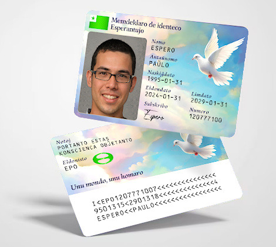

The self-declaration of identity is a philosophical project. Unfortunately it cannot be used for real-life situations such as jobs, apartment rentals, receiving mail, etc.
This generator works locally in your browser. No data is sent to a server or saved.
ID documents do more harm than good and should not be seen as a solution for trust or authentication. Many economic and social interactions can be done anonymously. For other situations, trust can be achieved by simply saying your (self-chosen) name, using a web-of-trust, word-of-mouth reputation, vouches, memberships, escrows or cash deposits, and authentication can be achieved by using a password, cryptographic key pair (e.g. PGP, Monero) or physical key or code (such as house keys or a safe code).
In recent years, more and more things are asking for proof of identity, from basic necessities like jobs, housing and healthcare, to smaller things like receiving mail, buying a sim card or joining a gym. However, it is not enough to write your name and address on a form. Instead, only government-issued IDs are accepted, which gives the state a “monopoly on identity”.
Monopolies are dangerous in general due to the fact that if the service provider is harmful, inaccessible or otherwise problematic, you cannot choose a different provider, start your own provider, or go without. This particular monopoly is even worse, considering that access to government ID determines if you may participate in the economy (jobs, banking), society (housing, volunteer work, education, libraries, sports) or even exist (national borders).
Many people have no access to government ID. This group includes some stateless people, refugees, people who weren’t registered at birth, and people who escaped from child abuse, domestic abuse or cult abuse. The state’s claimed solutions, such as asylum procedures, stateless determination procedures, delayed registration of birth, child protective services and witness protection, often cannot help in practice, as the victim is often ignored, accused of lying, blamed for the persecution, or worse sent back to the persecutors against their will. Despite issuing laissez-passer and Nansen passports in the past, the United Nations and Red Cross do not issue alternative IDs today. It would be a relief if these processes would work and allow vulnerable people to escape from undeserved and dangerous situations, but unfortunately this is not the reality.
In addition, the collectivist concept of citizenship can be dangerous. For example, if someone does not identify with their birth culture, they should not be forced to follow it for life or identify themselves as a member of this culture. Instead, they should be free to dissent against this culture or leave this culture’s jurisdiction. Even worse is conscription - the cruel system where a nation-state can force someone against their will to kill or be killed, just because they happened to be born inside a certain territory. The world would be more free if people could exist as individuals, conscientious objectors against the fatalism of birth cultures and violence of statism, with freedom of association to leave hostile environments and join self-chosen communities.
“The blood of the covenant is thicker than the water of the womb.”
Self-declaration of identity gives people the power to decide their own fate. People are no longer the property of nations, governments, birth cultures or birth parents. The choice of your own name and renunciation of your circumstances of birth is a liberating act of individualism, where your ideals, actions and efforts matter more than the situation that you were arbitrarily born into.
Instead of requiring third parties such as birth countries, birth cultures and birth parents to define an individual’s identity, the self-declaration allows you to define your own name and eschews the concepts of birth countries and citizenship.
The self-declaration is a CR-80 plastic card or paper business card (85.6mm x 54mm). The self-declaration is written in Esperanto and includes the Esperanto flag and symbol. Esperanto was chosen because it is anational (sennacieca = not associated with a specific country, culture or state) and was created as a borderless language of peace, built on voluntary free association. The design features artwork of a peace dove in a blue sky with clouds.
As it is a self-declaration, it is not stored in a central database, does not require a third party’s permission and does not need to be issued by an authority. You are the authority over your own life.
The self-declaration includes the text:
The self-declaration of identity contains:
The self-declaration of identity does not contain:
To make your own:
Example:
Note:
Unfortunately the self-declaration of identity cannot be used to bypass government ID requirements, such as for jobs, housing, healthcare, finances, volunteer work, contracts, receiving mail or buying a sim card. Other non-government IDs such as Digitalcourage Lichtbildausweis and World Passport have the same limitations.
Nation-states’ refusal to print IDs for undocumented, stateless and unregistered people (while forcing government ID requirements on employers, landlords, doctors and more) can and does put innocent people’s lives in danger. But unfortunately even the United Nations has not been able to change this, despite issuing conventions on statelessness and refugee status in the 1950s.
For further reading about identity (and why the state’s monopoly is harmful):
Passports Were a “Temporary” War Measure - Speranta Dumitru https://fee.org/articles/passports-were-a-temporary-war-measure
During World War II, we did have something to hide - Hans de Zwart https://medium.com/@hansdezwart/during-world-war-ii-we-did-have-something-to-hide-40689565c550
The Little-Known Passport That Protected 450,000 Refugees - Cara Giaimo https://www.atlasobscura.com/articles/nansen-passport-refugees
With each person left living on the streets, we are losing as a society - Petr Baroch https://www.statelessness.eu/blog/each-person-left-living-streets-we-are-losing-society
The rarely discussed dangers of KYC and what you can do about it - Anarkio https://vonupodcast.com/know-your-customer-kyc-the-rarely-discussed-danger-guest-article-audio
Exclusion and identity: life without ID - Privacy International https://www.privacyinternational.org/long-read/2544/exclusion-and-identity-life-without-id
Proving who I am: the plight of people in detention without proof of legal identity - Vicki Prais https://www.penalreform.org/blog/proving-who-i-am-the-plight-of-people/
Establishing identity is a vital, risky and changing business - The Economist https://www.economist.com/christmas-specials/2018/12/18/establishing-identity-is-a-vital-risky-and-changing-business
What’s in a name? The case for inclusivity through anonymity - Common Thread https://blog.twitter.com/common-thread/en/topics/stories/2021/whats-in-a-name-the-case-for-inclusivity-through-anonymity
True Names Not Required: On Identity and Pseudonymity in Cyberspace - Der Gigi https://dergigi.medium.com/true-names-not-required-fc6647dfe24a
Citizenship is obsolete - Samuela Davidova https://medium.com/@DavidovaSamuela/citizenship-is-obsolete-c36a20056752
Public Domain
Memdeklaro de identenco: self declaration of identity, autodeclaración de identidad, autodeclaração de identidade, autodéclaration d’identité, autodichiarazione di identità, autodeclararea identității, Selbsterklärung zur Identität, eigen verklaring van identiteit, Selvdeklaration af identitet, självdeklaration av identitet, egenerklæring om identitet, henkilöllisyysvakuutus, Isikuandmete esitamine, identitātes pašdeklarēšana, savęs deklaravimas, önbevallás a személyazonosságról, własna deklaracja tożsamości, vlastní prohlášení o totožnosti, vlastné vyhlásenie o totožnosti, samoprijava identitete, самодеклариране на самоличността, самопроголошення ідентичності, самозаявление о личности, αυτο-δήλωση ταυτότητας, pernyataan identitas diri, öz kimlik beyanı, الإعلان الذاتي عن الهوية, 身份自报, 身份自報, 自己申告, 신원 자기 선언